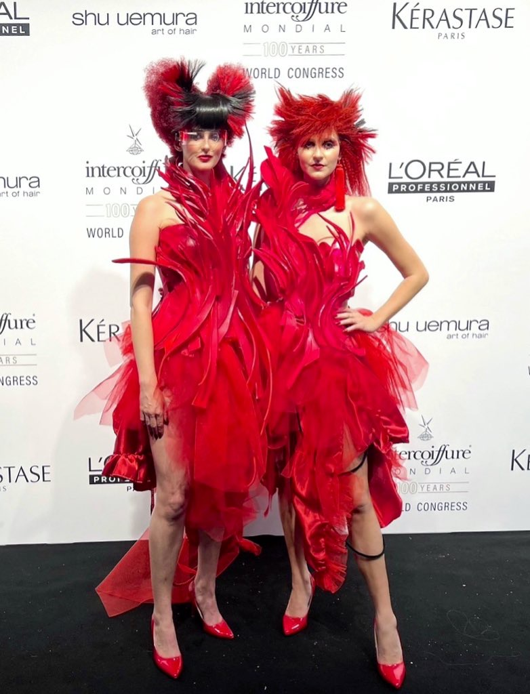
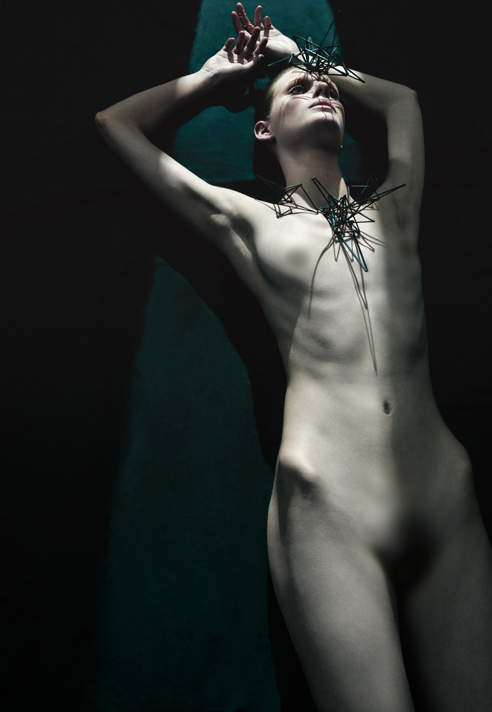
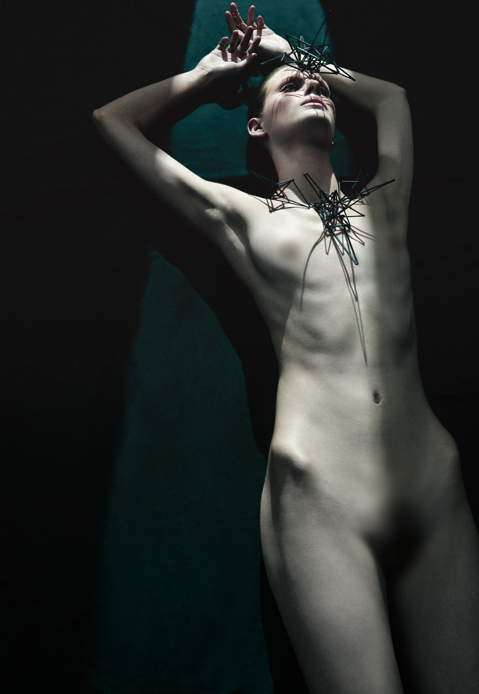
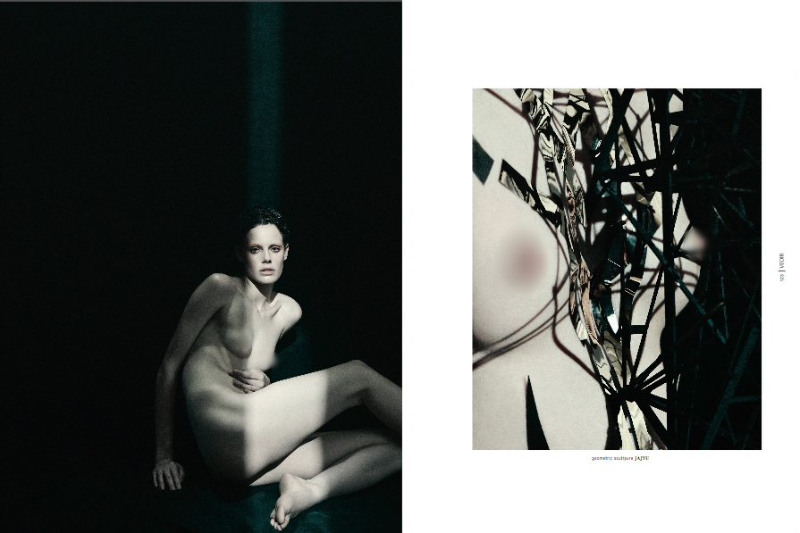
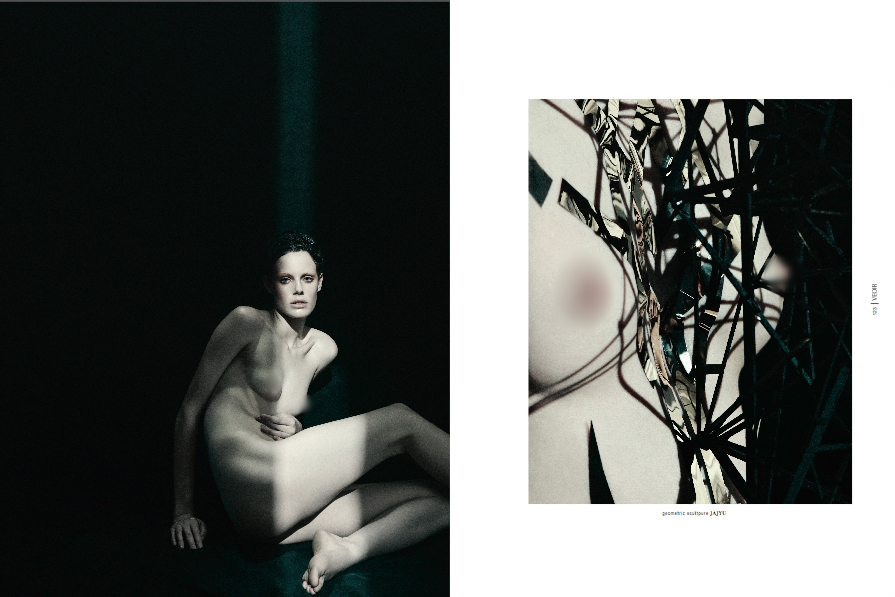

FASHION / BEAUTY




コンセプトは「影を纏う」。
ボディペイントをハイファッションへ昇華させ、身体を彩ることの本質を問う。
肌に落ちる影と、肉体の稜線。色彩を排したミニマリズムが、身体そのものの造形美を浮き彫りにする。
Concept: "To Wear the Shadow."
Elevating body paint to the realm of high fashion, questioning the essence of adorning the human form.
Minimalism through the interplay of shadows and the body's natural contours, stripped of all color.
Revealing the flesh itself as the ultimate sculptural beauty.

 


 
